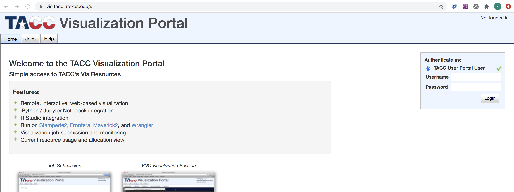
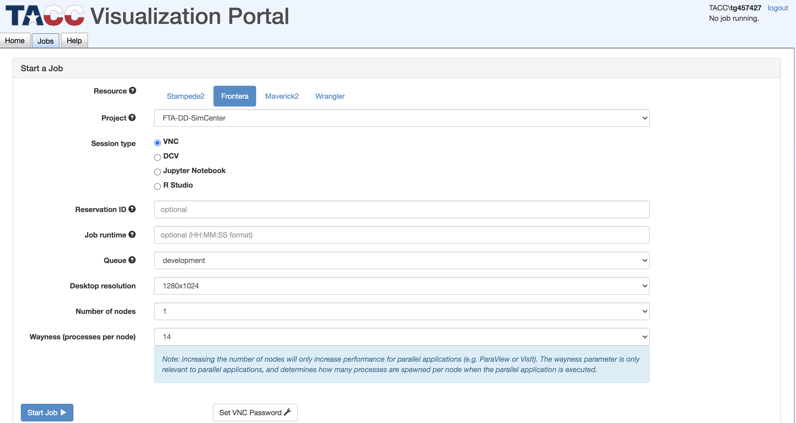
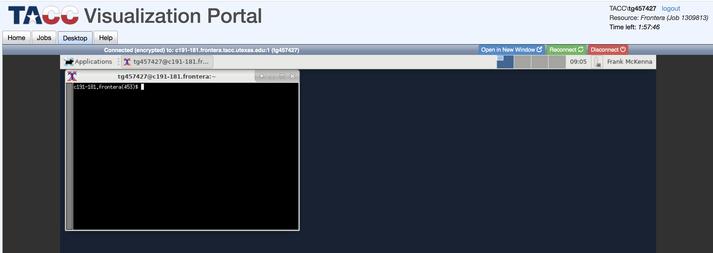

TACC-Frontera¶
DesignSafe-ci is closely integerated within TACC. TACC designs and deploys the world’s most powerful advanced computing technologies and innovative software solutions to enable researchers to answer complex questions like those you are researching and many more. For this workshop, and thanks to DesignSafe-ci, TACC are making available to you access to one of the fastest supercomputers in the world. To make use of these resources you need to be a good citizen while utilizing them.
We will be using the **Frontera** system and they provide a comprehinsive set of usage notes . The following is a brief overview of it with Linux commands for this workshop.
Accessing the system¶
To access the system you will be using ssh. To login in start a terminal or powershell application and type the following:
ssh yourName@frontera.tacc.utexas.edu
Warning
When trying to log into TACC with ssh (possibly only on a Windows computer) you cannot also be logged in to TACC through your web browser. Log off in your browser and kill the browser tab.
Note
When you login like this you are logging in to one of their login nodes. Login nodes are meant for copying and editing files, and compiling applications. Applications should not be run on a compute node per TACC policy. To launch an application you use either idev or sbatch. For this workshop we will just use idev. When running a typical applications that run for long periods and require many nodes you must instead use sbatch.
Note
When logged in at TACC you have 3 directories similar to your home directory on your local machine:
$HOME: 25GB of backed up data
$WORK: 1TB of data, not backed up but not purged
$SCRATCH: no quota, not backed up and subject to purge of file older than 10 days.
Each node also has a /tmp folder. If you plan on doing a lot of file i/o when your application is running, in your sbatch script or when using idev copy files to this directory and get your application to open them from here. The files are removed when the job is done, so be sure and copy any needed files here back to one of other directories.
TACC has special cd commands to change to these directories, cdh, cdw, cds.
Transferring files between your system and TACC¶
To copy files a.c from your system to your $HOME directory at TACC ypou can use scp. In the terminal window in the directory containing a.c type the following:
scp a.c yourName@frontera.tacc.utexas.edu:~/
To copy file a.c from your $HOME directory at TACC to your local system you can again use scp. In the terminal window in the directory in which you want a.c to be copied to type:
scp yourName@frontera.tacc.utexas.edu:~/a.c ./
Note
Typically directories are copied by zipping up the dir into .zip or .tar.gz files and then copied. Try not to use the -r option= on directories.
Also you can also use rsync and globus-online to transfer files, globus-online should be used when transferring large files to the login nodes.
Basic Linux Commands¶
The TACC machines are running a variant of the Linux operating system. As such you will have to use Linux commands to move around. The few Linux commands you will need for this workshop are the following:
To show the directory you are currently in, type the following in the terminal window:
pwdTo list files in current directory, issue the following command in the terminal window:
lsTo list all files and show type and sizes, issue the following command in the terminal window:
ls -salmake a new directory
mkdir dirNamechange directories with cd to a dir named dirName that is in current dir .. code:
cd dirNamemake a copy of a file orig.c, creating a file new.c all in current directory
cp orig.c new.cTo remove a file named file.c from current directory type:
rm file.cTo remove an empty directory named dir1 from current directory type:
rmdir dir1To remove a directory named dir1 (and all it’s contents) from current directory type:
rm -fr dir1
Building and Running an Application¶
Warning
Again, do not run jobs or perform intensive computational activity on the login nodes. Your account may be suspended and you will lose access to the queues if your jobs are impacting other users. You will know if you are in a login node if you see a login number on the terminal before the prompt, e.g.:
login1$
To run jobs at TACC you can use sbatch or idev. sbatch is used to submit long running jobs. idev short interactive jobs, which is useful for testing and running the small applications done for this workshop.
We present 3 scenarios for compiling and running a C program.
To compile a sequential program contained in a file myCode.c in the directory $HOME/test and run an application built in an idev environment type the following:
login1$ cd test login1$ icc myCode.c -o myCode.exe login1$ idev -n 1 nid00181$ ./myCode nid00181$ exit login1$To compile a parallel MPI program contained in a file myCode.c in the directory $HOME/test and run an application built on 16 in an idev environment with access to 16 cores, use the following to compile the code on a login node, start idev environment with 16 cores, and then launch the application with 16 and then repeat with 4 cores:
login1$ cd test login1$ mpicc myCode.c -o myCode.exe login1$ idev -n 16 nid00181$ ibrun ./myCode nid00181$ ibrun -n 4 ./myCode nid00181$ exit login1$To compile a parallel OpenMP program contained in a file myCode.c in the directory $HOME/test and run an application built on 16 in an idev environment with access to 16 cores (and then repeat with 4 cores), use the following:
login1$ cd test login1$ icc -myCode.c -o myCode.exe login1$ idev -n 16 nid00181$ ./myCode nid00181$ EXPORT OMP_NUM_THREADS=4 nid00181$ ./myCode nid00181$ exit login1$
Note
idev is used for small interactive jobs and for testing while you are building a larger application. While testing it is a pain to start idev and exit if you are constantly building and then running the application. I suggest opening two terminal windows and starting idev in one. This allows you to compile in the other terminal and then quickly test it in the terminal in which you have started idev.
Alternative Access via Browser¶
As an alternative to using ssh from the terminal there is another way to get access to a linux shell on Frontera. The solution involves acessing the vis posrtal through the web browser.
When you do follow these steps:
Go to web page and enter login info top right and press Login
Log in through vis portal¶
Make sure Frontera is selected, it should auto pick up your Allocation. Now press the button lower middle that says set VNC passowrd.
Set Frontera and then select Set VNC Password¶
Enter a new password (twice) and press button set VNC Password.

Enter VNC Password¶
Press Start Job button bottom left
Now Press Start Job¶
Enter VNC password in box at the top

You are there! Start typing in the xterminal window. If you type xterm & here, it will bring up an terminal window with a white background and black text.
You Did It!¶
Setup for the TAPIS and Creating an App session¶
Later in week 2, we will be using the Tapis restful API to interact with TACC. By end of the session you will be able to do more with designsafe than any civil engineer not working for designsafe as we will be using the file systems, building apps and launching them on frontera using tapis from our desktop terminals.
Before the session we need you to install tapis-cli on your systems. It is code developed in python that allows us to interact with TACC by calling tapis from the command line.
It is installed through pip:
pip install tapis-cli
OR
pip3 install tapis-cli
depending on your OS and python install.
After installing please run the following in a terminal:
tapis auth init
Note
For tenant name enter designsafe
For username your tacc login
For password your tacc password.
For rest of prompts just hit enter (Container Registry, git server )